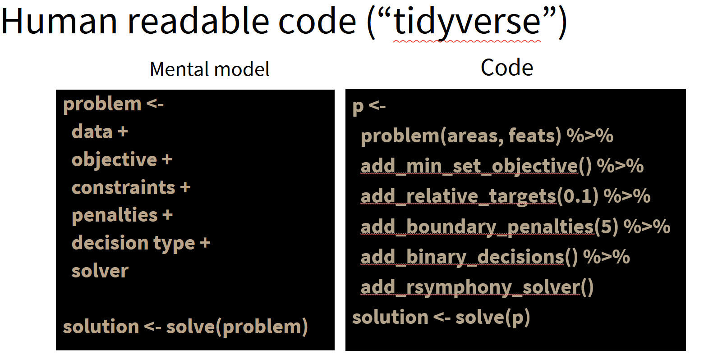
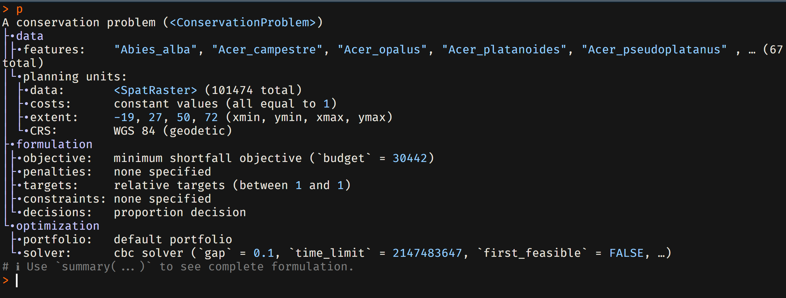

In the previous section (Chapter 3) we loaded a range of already prepared datasets including PU and features. Now we are ready to create our first conservation planning problem.
Prioritizr makes use of a ‘tidyverse’ informed and human-readable syntax where a problem is defined by adding data, features and constraints sequentially to an object. This is thus quite similar as the use of ‘dplyr’ in R.

Tidyverse inspired flow
Pipe
We will use in this workshop the pipe symbol to chain different R functions (such as those from prioritizr) together. Useable are both the classical pipe from the magrittr package ( %>% ) and the pipe used by default since R version 4.0 ( |> ). We use both pipes often interchangeably in this workshop.
3.1 Our first planning problem
For our first problem we will create a problem that finds the best areas for 30% protected area coverage on European land. Go to the next section ( Chapter 4) to learn how to solve and interpret the outputs from a prioritizr problem.
Tip: Hover over the numbers on the right to learn more about each function. Note that the order
This effectively defines the total budget as 30% of the length of all PU. This works since the length is identical to the sum (cost =1).
2
Here we define a problem using the planning unit layer and the different species layer. Internally this will create an intersection of both. Other possible inputs to this function could be zones.
3
An objective function is added here. In this case we use the minimum shortfall objective.
4
For simplicity we define target as 100% for all species distributions
5
Here we add a solver. We rely here on CBC which in tests hasthe best performance among open-source solvers.
6
Here we add proportional decisions means that proportions of planning units can be selected in the solution. This typically solve faster than binary decisions.
3.2 Understanding the problem object
Now that we have created a problem, let’s have a look at the object.
# Simply runp

The output of a prioritizr object.
As visible the object contains information about the Planning units, including the spatial extent and geographic projection, as well as any features and complexity factors related to the formulation of the problem.
Running p$summary() will provide a summary with more detail.
Object
The prioritizr planning objects contain a range of different functions that can be queried and executed, for example to obtain summaries or specific datasets and parameters contained within. For example object$data will return: (a) features, (b) planning units, (c) an intersection call rij_matrix and more information.
3.3 Different datasets for planning
In this tutorial we use throughout gridded datasets. However it should be noted that - internally - prioritizr does not operate on spatial files but on tabular data. This is also true when not gridded but vector data are provided.
Why is this relevant to know? When creating a problem with spatial data (gridded or vector files), at the time of problem creation these data are internally converted into large tabular data. When planning over many species or planning units it can be computational efficient to not have prioritizr, but to do this conversion directly and then supply tabular data.
Typical steps involved here are:
Converting gridded planning unit data to a table in long form (row) containing both the cell id, the planning unit id and the cost
Convert the features into a long table containing the planning unit id, the feature id (and name) and the amount stored.
Intersecting the tables created in step 1) and 2)
Preparing any other tables for weights or targets, aligned with the planning unit id.
Note
Another context might be when data has already been formatted for use in another software such as Marxan. Prioritizr is able to directly use the formatted tables prepared for a typical Marxan application, thus making it easy to switch between software.